Data Exploration
Datasets
Type of Dwelling Data 19-01-2024 (Ver 1.0) / Total Type of Dwelling Data 20-01-2024 (Ver 1.0)
Source: https://www.singstat.gov.sg/-/media/files/publications/population/excel/geospatial-data2023.ashx
Added Household Data 20-01-2024 (Ver 1.0)
Source: https://www.singstat.gov.sg/-/media/files/find_data/population/statistical_tables/hsetod2023.ashx
Yearly Population Data 24-01-2024 (Ver 1.0)
Household Data 29-01-2024 (Ver 1.0)
Age Grp, Gender, Race Data 29-01-2024 (Ver 1.0)
Specific Age Data 29-01-2024 (Ver 1.0)
Age Group and Dwelling 29-01-2024 (Ver 1.0)
Source: https://tablebuilder.singstat.gov.sg/statistical-tables/downloadMultiple/ZMUaefcb400I0QjaMl60CQ
EDA
Dataset: Type of Dwelling Data 19-01-2024 (Ver 1.0)
Chi Square Test
Used for:
Planning Area and Age Group - AMK
Planning Area and Age Group - Punggol
Dwelling Type and Age Group in Planning Area (AMK)
Dwelling Type and Age Group in Planning Area (Punggol)
Why it was chosen:
Categorical Variables: Planning Area, Age Group and Dwelling Type are categorical variables. Planning Area represents different areas in Singapore, Age Group categorises individuals into different age ranges, while Dwelling Type categorises the different types of flats.
Independence Testing: The chi-square test assesses whether there is a significant association or independence between the selected categorical variables. One example would be, it helps determine whether there is a relationship between the Planning Area and Age Group categories or if they are independent of each other.
An example of the result:
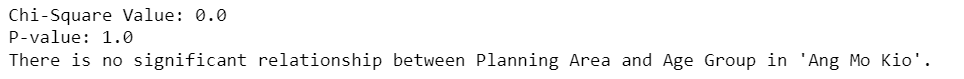
Correlation Heatmap
Used for:
Based on Type of Dwelling - AMK
Based on Type of Dwelling - Punggol
Based on Type of Dwelling - AMK & Punggol
Why it was chosen:
Mixed Data Types: The dataset contains a mix of numerical data (‘Total Number of Households in 2023’) and categorical data (‘Type of Dwelling’). A correlation heatmap is suitable for assessing relationships between these types of variables.
Understanding Relationships: The goal is likely to understand how different types of dwellings are related to the total number of households. A correlation heatmap visually display the strength and direction of these relationships, helping to identify patterns.
Identifying Correlations: The heatmap helps in identifying which types of dwellings show a significant positive or negative correlation with the total number of households. This is crucial for understanding housing patterns in ‘Ang Mo Kio’ (or other planning areas).
Insights into Housing Trends: The correlation heatmap is likely used to gain insights into housing trends in ‘Ang Mo Kio’ (or other planning areas). For example, it may reveal whether certain types of dwellings are associated with larger or smaller numbers of households.
An example of the result:
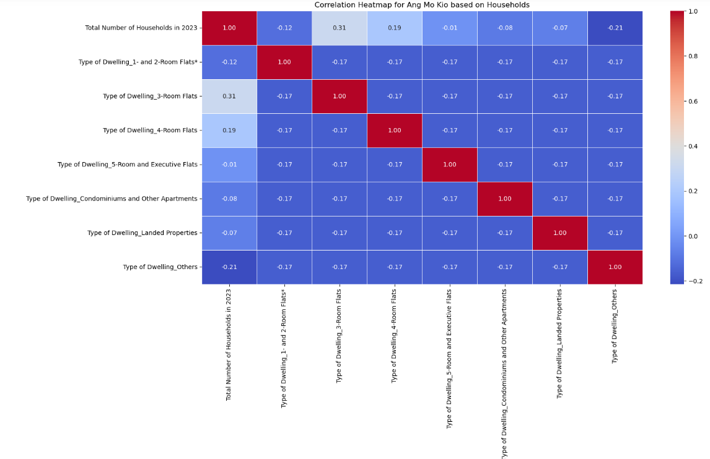
Linear - One Hot Encoded Set
Used for:
- All features
Why it was chosen:
Continuous Target Variable: Regression models are well-suited for predicting continuous target variables. In this case, the target variable is the “Total Number of Households in 2023,” which is a continuous numerical variable.
Linear Relationship: Regression models assume a linear relationship between the independent and dependent variables. If the relationship between the features and the total number of households is approximately linear, a regression model can effectively capture and represent this relationship.
Feature Importance: It allows for the identification of significant features. The coefficients associated with each feature help in understanding how changes in a particular feature affect the predicted total number of households.
An example of the result:
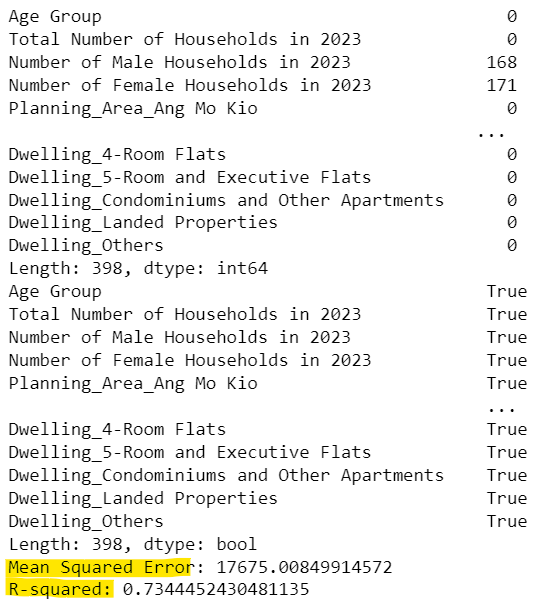
Dataset: Total Type of Dwelling Data 20-01-2024 (Ver 1.0)
Correlation Heatmap
Used for:
Based on Subzones - AMK
Based on Subzones - Punggol
Why it was chosen:
Multiple Variables: The dataset involves multiple subzones, and a correlation heatmap efficiently displays the correlation coefficients for each pair of subzones with the target variable (“Number of Households in 2023”).
Strength and Direction of Relationships: The heatmap can not only show the presence of a relationship but also indicates the strength and direction of the correlation. This provides insights into which subzones are positively or negatively associated with the total number of households.
Comparative Analysis: It allows for a quick comparison between different subzones. Thus, one can easily identify which areas have a stronger or weaker relationship with the total number of households, aiding in decision-making or further investigation.
An example of the result:
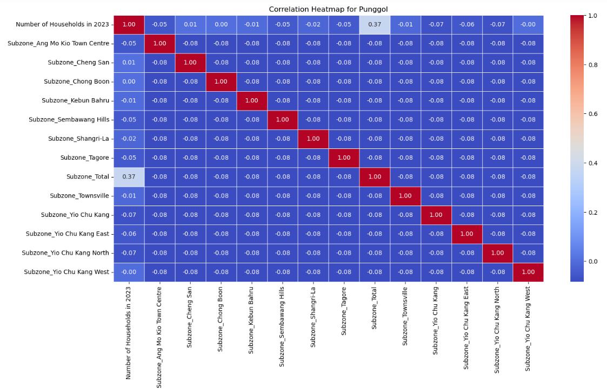
KDE for NORMALISED age distribution in Planning Area - Subzones
Used for:
Distribution of number of households in Punggol
Distribution of number of households in Ang Mo Kio
Why it was chosen:
Compare multiple subzones: The plots allow easy comparison of age distribution patterns across different subzones within each planning area. This helps identify similarities and differences. Ultimately, I was thinking along the lines of let us try to look at the Subzone that most resembles the total distribution(make up) of the specific Planning Area.
Normalise values: Calculating the density (share of total households) rather than raw counts normalises the data across subzones of different sizes. This facilitates comparison.
Overlay lines on same plot: Plotting the data for multiple subzones together on the same axes enables visual evaluation of relative peaks and troughs across age groups.
Line plot is intuitive: The line plot format provides an intuitive and clear way to visualise trends in household distribution by age. No need for advanced chart knowledge to interpret patterns.
An example of the result:
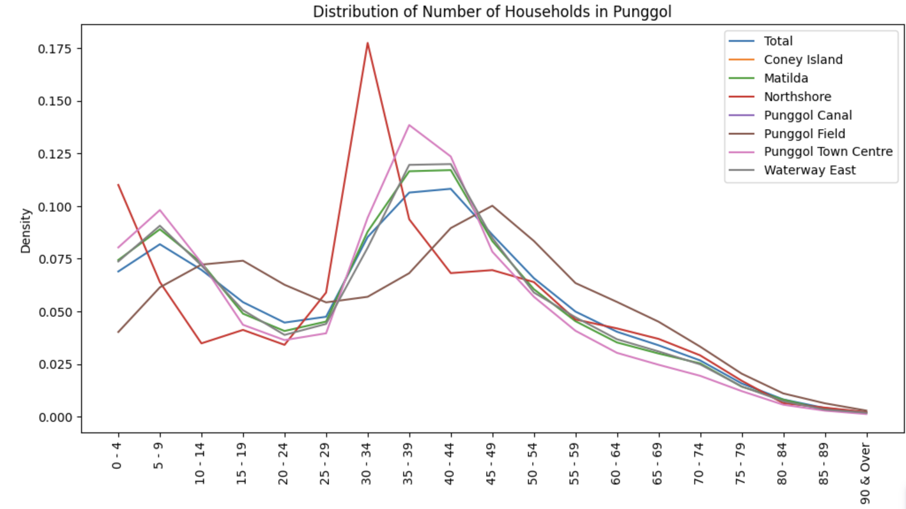
Dataset: Household Data 29-01-2024 (Ver 1.0)
Correlation Heatmap
Used for:
- All features
Why it was chosen:
Multiple Variables: The dataset involves mainly two types of features (number of households that contain a certain number of people and the average number of people living in different types of dwellings), therefore a correlation heatmap aids in displaying any relationships between the two types of features.
Strength and Direction of Relationships: The heatmap can identify the presence of a relationship and also the strength and direction of said correlation. This would greatly help to provide insights into any relationship between the two features, which could warrant further investigation into said relationship.
Correlation Analysis: It allows for a quick comparison between the average number of people in the varying HDB flats as well as the number of households that contain a certain number of people. This would greatly allow one to identify any relationship between the two types of features that might prompt further analysis for the team.
An example of the result:
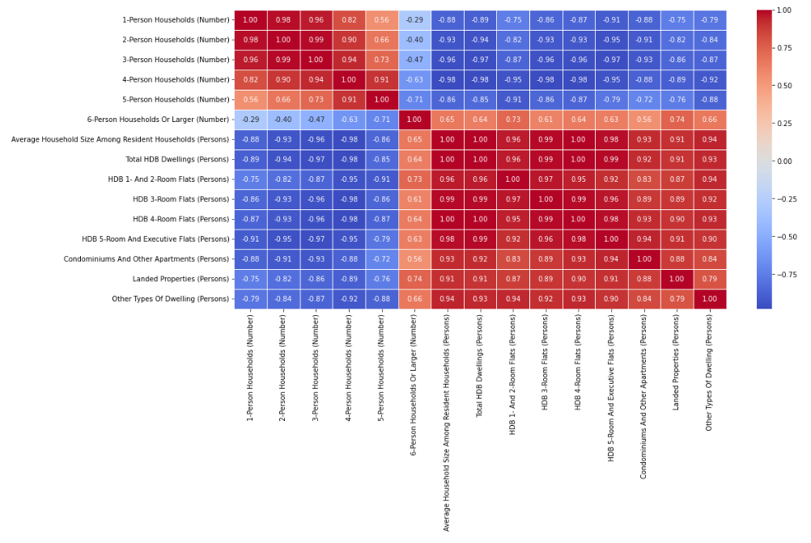
Dataset: Age Grp, Gender, Race Data 29-01-2024 (Ver 1.0)
Population Pyramid
Used for:
Total Male Residents
Total Female Residents
Why it was chosen:
Two Variables: The dataset involves the change in population for males and females from 1957 to 2023 so a Population Pyramid would be suitable to compare and contrast the population of the genders over the years.
Showcasing Trends: The Pyramid can clearly showcase the overall population growth trend over the years while also showing the differences in population between both genders at a glance.
Population Analysis: It allows us to recognise the overall trend both in the general population as well as with both genders so we can determine if this trend would persist with the inclusion of another feature like age or race.
An example of the result:
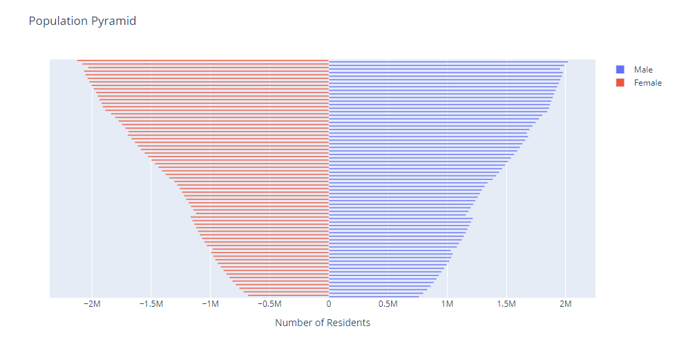
Dataset: Specific Age Data 29-01-2024 (Ver 1.0).csv
Percentage Change Line Chart
Used for:
- Based on the age data for Singapore Residents
Why it was chosen:
Multiple Variables: The dataset contains the age group data of the population from 1957 to 2023 so this line chart allows one to compare and contrast between the percentage changes of different age groups over the years.
Showcasing Changes: The chart clearly displays any significant change in population for a specific age group over the years and this allows us to gain insights from the data.
Population Analysis: It allows us to recognise significant changes in the population structure of Singapore and narrow down specific demographics that might require further analysis.
An example of the result:
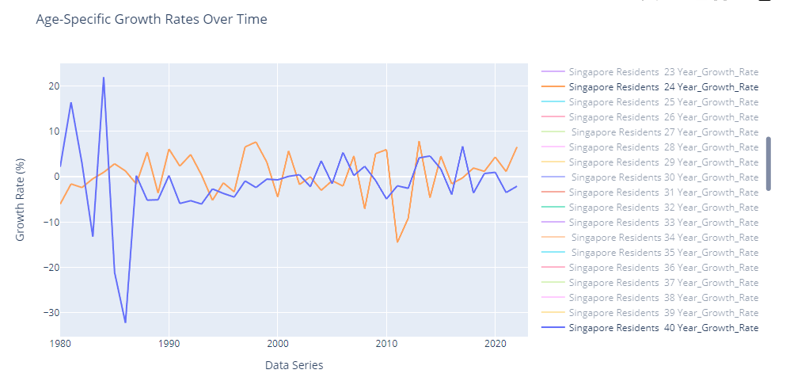
Dataset: Age Group and Dwelling 29-01-2024 (Ver 1.0)
Stacked Bar Chart
Used for:
- All features
Why it was chosen:
Multiple Variables: The dataset contains the age group dwelling type data of the population from 1957 to 2023 so this stacked bar chart would allow us to compare and contrast the dwelling data for different age groups over the years.
Showcasing Changes: The chart clearly displays differences in dwelling type for different age groups through the years as well as the total number of residents in that age group in that year.
Dwelling Type Analysis: It allows notice shifts in dwelling type for a specific age group over the years, which could help us gather insights for further analysis.
An example of the result:
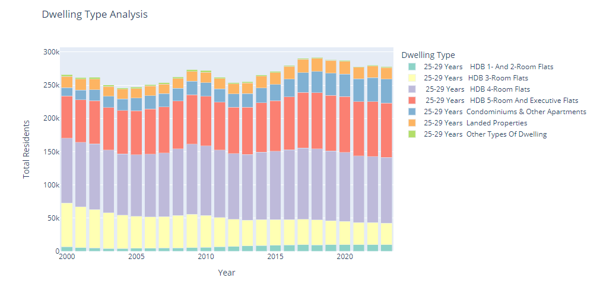
Dataset: Added Household Data 20-01-2024 (Ver 1.0)
Bar Chart/Stacked Bar Charts
Used for:
- Displaying the number of households in a straightforward manner, where different levels of details are captured (less, for bar chart, more for stacked bar chart)
Why it was chosen:
Compare multiple groups: The bar plot allows for an effective visual comparison of the new household figures across multiple sub-zones within two separate planning areas. This helps identify patterns and outliers.
Showcase trend at sub-zone level: Aggregating and plotting the data at the sub-zone level provides a more granular view of projections, beyond just looking at overall planning area figures. It reveals intra-area differences. Similarly, different types of dwelling added can be fairly interesting, especially if we compare within a time period.
Identify high growth/decline areas: The visualised data immediately highlights which specific sub-zones saw major increase.
Both results:
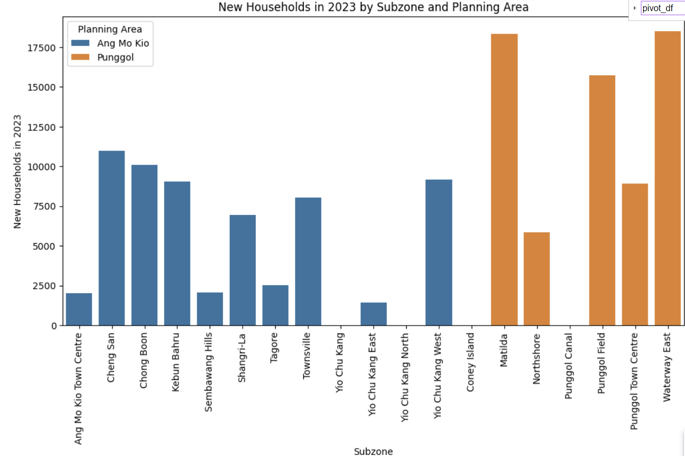
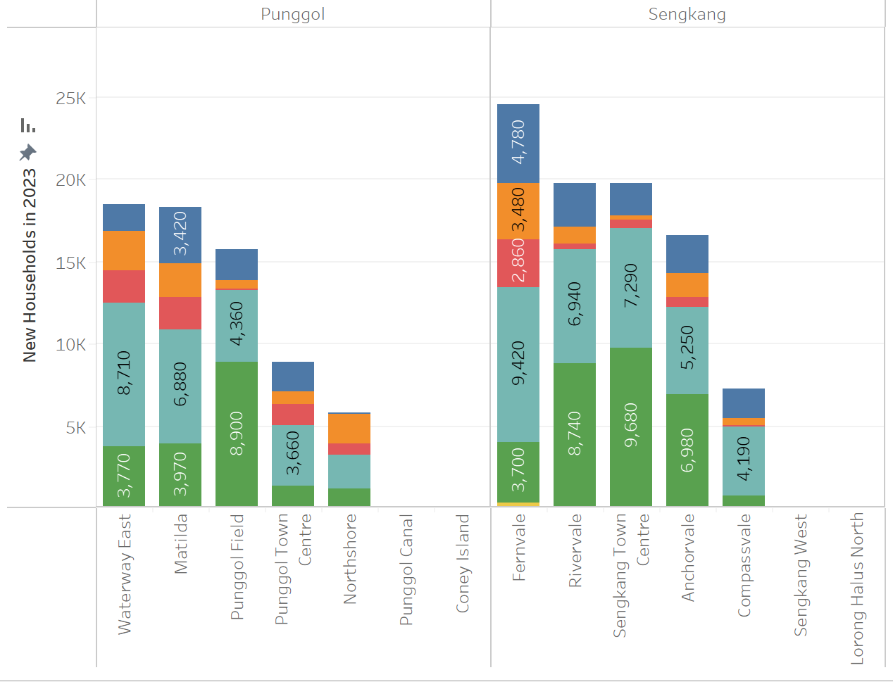
Dataset: Yearly Population Data 24-01-2024 (Ver 1.0)
Correlation Heatmap
Used for:
- Checking strength of correlations across the number of variables less the following variables: Total Population (Number), Resident Population (Number), Singapore Citizen Population (Number), Permanent Resident Population (Number), Non-Resident Population (Number) across the datasets
Why it was chosen:
Focus on potentially insightful ratios: Ratios like share of citizens, PRs etc. provide normalised perspectives that can reveal new insights compared to raw numbers. These were prioritised for initial exploratory analysis.
Allow comparisons across many pairs simultaneously: A heatmap allows visually scanning all variable relationships at once, rather than testing correlations one pair at a time. This facilitates identification of overall patterns.
An example of the result:
Here, to cut the noise: Only strong correlations +->0.70 are shown, and excludes ‘counting itself’ which explains the masked boxes in the correlation heatmap.
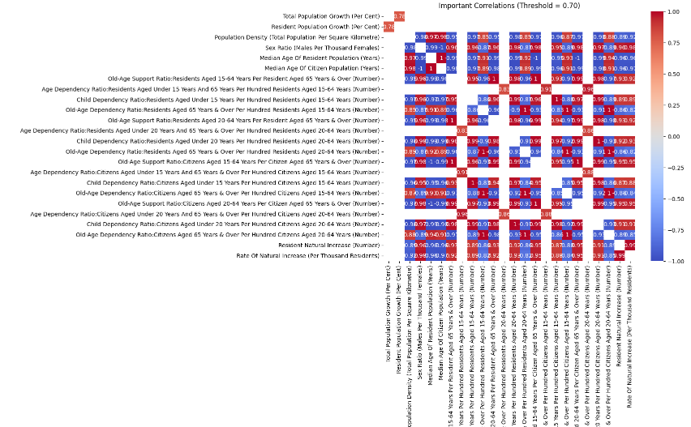
List of hypotheses formulated after EDA
*Those bolded are the ones we have decided to explore further
‘There is no significant relationship between the ’Age Group’ and ‘Planning Area’ in ‘Ang Mo Kio’.’
‘There is no significant relationship between the ’Age Group’ and ‘Planning Area’ in ‘Punggol’.’
‘There is no significant relationship between the ’Age Group’ and ‘Dwelling Type’ in ‘Ang Mo Kio’.’
‘There is no significant relationship between the ’Age Group’ and ‘Dwelling Type’ in ‘Punggol’.’
‘An increase in the number of 3-room flats is associated with an increase in the total number of households.’
‘As the total number of households increases, the presence of ’Others’ in the type of dwelling tends to decrease.’
‘An increase in the number of 4-room flats and 5-room and executive flats is associated with an increase in the total number of households.’
‘As the total number of households increases, the presence of ’Others’ and landed properties in the type of dwelling tends to decrease.’
‘This suggests that as the number of households increases, the proportion of certain types of dwellings decreases.’
‘Find out whether there is a strong relationship between the features and the target variable (total number of households in 2023).’
‘As the number of households decreases in these specific subzones, there is a tendency for an increase in the total number of households in Ang Mo Kio / Punggol.’
‘Over the years, there is an increase in the number of households which results in the ratio of people in a household to fall .’
‘Despite an increase in population of both males and females over the years, there could be a fall in their numbers when looking at specific age groups of the genders.’
‘Any significant change in growth rate for a specific age group will have a knock on effect as this age group ages.’
‘Younger demographics tend to live in larger households while older demographics tend to live in smaller ones.’
‘Areas with an increase of higher SES dwelling over the years will have lesser incidence of desire lines forming.’
‘Areas with higher population densities at the subzone level will have a higher incidence of desired lines forming.’
‘Has there been a change in the demographic composition across age groups in Ang Mo Kio over the past decade?’
‘Has there been a change in the demographic composition across age groups in Punggol over the past decade?’